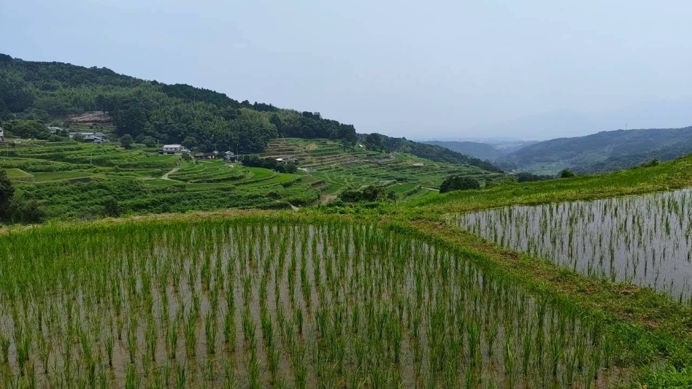

竹あかりを作ろう ご飯イベ！！
参加お申し込み
大分県別府市・内成棚田。日本の棚田百選に選ばれた美しい石垣を守るため、別府の地域団体「アソビLAB」が放置竹林の伐採・活用を開始。APU（立命館アジア太平洋大学）の学生がその活動をサポートしています。

室町・江戸時代から続く石垣棚田のスケールと、私たちが直面している現実。
すり鉢状の山肌に手作業で築かれた膨大な石垣棚田
高齢化に伴い、現在作付けが行われているのは約半分
標高150mから300mにわたって広がるダイナミックな景観
別府市南部の山懐に抱かれた自然豊かな環境


棚田の周辺で繁茂する竹林は、日照を妨げ、地下茎が石垣を傷める要因となっていました。
別府の地域団体**アソビLAB**が主体となり、伐採した竹を活用した「竹あかり」や「竹ブランコ」、アソビLABオリジナルの「たけっと（竹ラケット）」などを制作。APU生もその活動のサポートを行っています。
竹林活動の詳細を見るアソビLABが主催する内成棚田での竹林活用イベント。
内成棚田の風景や活動の最新情報を発信しています。